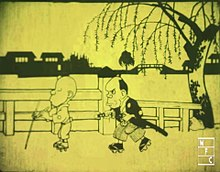
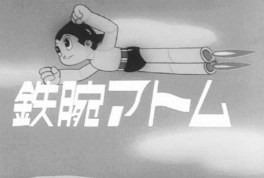
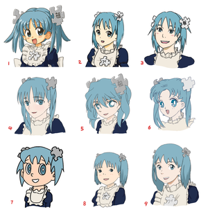

Anime
From Wikipedia, the free encyclopedia
Not to be confused with
Amine .
Anime (Japanese: アニメ, IPA: [aɲime] ( 🔊listen)) is
hand-drawn
and
computer-generated animation
originating from Japan. Outside of Japan and in English, anime refers
specifically to animation produced in Japan.[1]
However, in Japan and in Japanese, anime (a term derived from a
shortening of the English word animation) describes all animated works,
regardless of style or origin. Animation produced outside of Japan with
similar style to Japanese animation is commonly referred to as
anime-influenced animation.
The earliest commercial Japanese animations date to 1917. A
characteristic art style emerged in the 1960s with the works of
cartoonist
Osamu Tezuka
and spread in following decades, developing a large domestic audience.
Anime is distributed theatrically, through television broadcasts,
directly to home media, and
over the Internet. In addition to original works, anime are often adaptations of
Japanese comics (manga),
light novels,
or
video games. It is classified into numerous genres targeting various broad and
niche audiences.
Anime is a diverse medium with distinctive production methods that have
adapted in response to emergent technologies. It combines graphic art,
characterization, cinematography, and other forms of imaginative and
individualistic techniques.[2]
Compared to Western animation, anime production generally focuses less
on movement, and more on the detail of settings and use of "camera
effects", such as panning, zooming, and angle shots.[2]
Diverse art styles are used, and character proportions and features can
be quite varied, with a common characteristic feature being large and
emotive eyes.[3]
The anime industry consists of over
430 production companies, including major studios such as
Studio Ghibli,
Sunrise,
Bones,
Ufotable,
MAPPA,
CoMix Wave Films
and
Toei Animation. Since the 1980s, the medium has also seen international success with
the rise of foreign
dubbed,
subtitled
programming and its increasing distribution through
streaming services. As of 2016, Japanese animation accounted for 60% of the world's
animated television shows.[4]
Etymology
As a type of
animation, anime
is an art form that comprises many
genres found in other
mediums; it is sometimes mistakenly classified as a genre itself.[5]
In Japanese, the term anime is used to refer to all animated works,
regardless of style or origin.[6]
English-language dictionaries typically define anime (/ˈænɪmeɪ/)[7]
as "a style of Japanese animation"[8]
or as "a style of animation originating in Japan".[9]
Other definitions are based on origin, making production in Japan a
requisite for a work to be considered "anime".[10]
The etymology of the term anime is disputed. The English word
"animation" is written in Japanese
katakana as
アニメーション (animēshon) and as アニメ (anime, pronounced
[a.ɲi.me]
( 🔊listen)) in its shortened form.[10]
Some sources claim that the term is derived from the French term for
animation dessin animé ("cartoon", literally 'animated design'),[11]
but others believe this to be a myth derived from the popularity of
anime in France in the late 1970s and 1980s.[10]
In English, anime—when used as a common
noun—normally functions
as a mass noun.
(For example: "Do you watch anime?" or "How much anime have you
collected?")[12][13]
As with a few other Japanese words, such as
saké and
Pokémon,
English texts sometimes spell anime as animé (as in French), with an
acute accent
over the final e, to cue the reader to pronounce the letter, not to
leave it silent as English orthography may suggest. Prior to the
widespread use of anime, the term Japanimation was prevalent throughout
the 1970s and 1980s. In the mid-1980s, the term anime began to supplant
Japanimation;[14]
in general, the latter term now only appears in period works where it is
used to distinguish and identify Japanese animation.[15]
History
Main article:
History of anime
Precursors
Emakimono and
kagee are considered precursors of Japanese animation.
[16] Emakimono was common in the eleventh century. Traveling storytellers narrated legends and anecdotes while the emakimono was unrolled from the right to left with chronological order, as a moving panorama.
[16] Kagee was popular during the Edo period and originated from the shadows play of China.
[16] Magic lanterns from the Netherlands were also popular in the eighteenth century.
[16] The paper play called
Kamishibai surged in the twelfth century and remained popular in the street theater until the 1930s.
[16] Puppets of the
bunraku theater and
ukiyo-e prints are considered ancestors of characters of most Japanese animations.
[16] Finally, mangas were a heavy inspiration for anime. Cartoonists
Kitzawa Rakuten and
Okamoto Ippei used film elements in their strips.
[16]
Pioneers
Animation in Japan began in the early 20th century, when
filmmakers started to experiment with techniques pioneered in France, Germany, the United States, and Russia.
[11] A claim for the earliest Japanese animation is
Katsudō Shashin (c. 1907),
[17] a private work by an unknown creator.
[17] In 1917, the first professional and publicly displayed works began to appear; animators such as
Ōten Shimokawa,
Seitarō Kitayama, and
Jun'ichi Kōuchi (considered the "fathers of anime") produced numerous films, the oldest surviving of which is Kōuchi's
Namakura Gatana.
[19] Many early works were lost with the destruction of Shimokawa's warehouse in the
1923 Great Kantō earthquake.
[20]

A frame from
Namakura Gatana (1917),
the oldest surviving Japanese animated
short film made for cinemas
Modern era
In the 1960s, manga artist and animator Osamu Tezuka adapted and simplified Disney animation techniques to reduce costs and limit frame counts in his productions.[28] Originally intended as temporary measures to allow him to produce material on a tight schedule with an inexperienced staff, many of his limited animation practices came to define the medium's style.[29] Three Tales (1960) was the first anime film broadcast on television;[30] the first anime television series was Instant History (1961–64).[31] An early and influential success was Astro Boy (1963–66), a television series directed by Tezuka based on his manga of the same name. Many animators at Tezuka's Mushi Production later established major anime studios (including Madhouse, Sunrise, and Pierrot).

Frame from the opening sequence of Tezuka's 1963 TV series
Astro Boy
Attributes
Anime differs from other forms of animation by its art styles, methods of animation, its production, and its process. Visually, anime works exhibit a wide variety of art styles, differing between creators, artists, and studios. While no single art style predominates anime as a whole, they do share some similar attributes in terms of animation technique and character design.

Anime artists employ many distinct visual styles.
Anime is fundamentally characterized by the use of limited animation, flat expression, the suspension of time, its thematic range, the presence of historical figures, its complex narrative line and, above all, a peculiar drawing style, with characters characterized by large and oval eyes, with very defined lines, bright colors and reduced movement of the lips.
characters
The body proportions of human anime characters tend to accurately reflect the proportions of the human body in reality. The height of the head is considered by the artist as the base unit of proportion. Head heights can vary, but most anime characters are about seven to eight heads tall. Anime artists occasionally make deliberate modifications to body proportions to produce super deformed characters that feature a disproportionately small body compared to the head; many super deformed characters are two to four heads tall. Some anime works like Crayon Shin-chan completely disregard these proportions, in such a way that they resemble caricatured Western cartoons.

Same character portrayed in different anime styles.